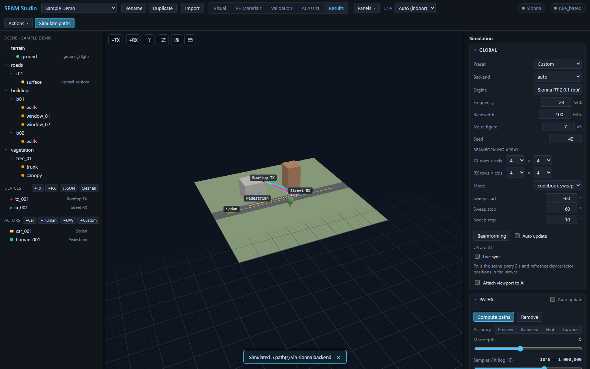
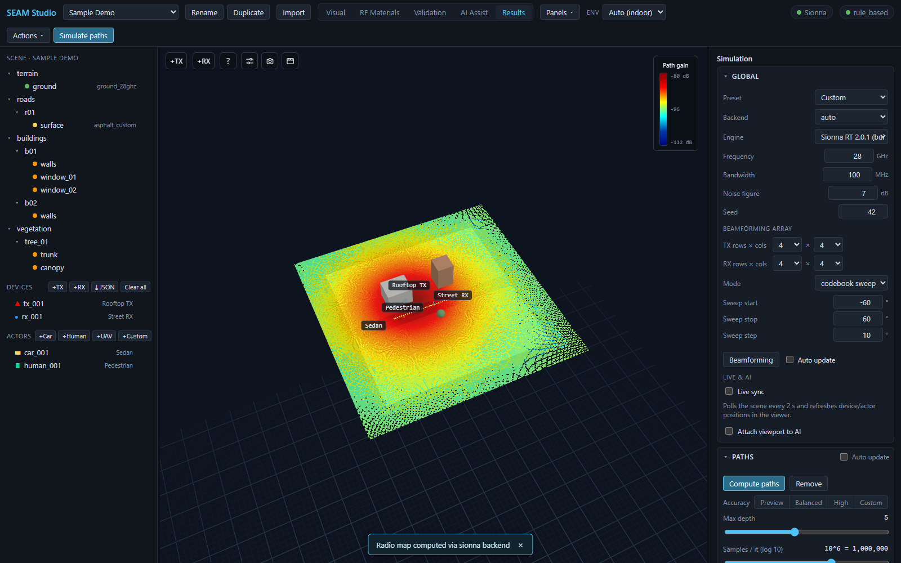
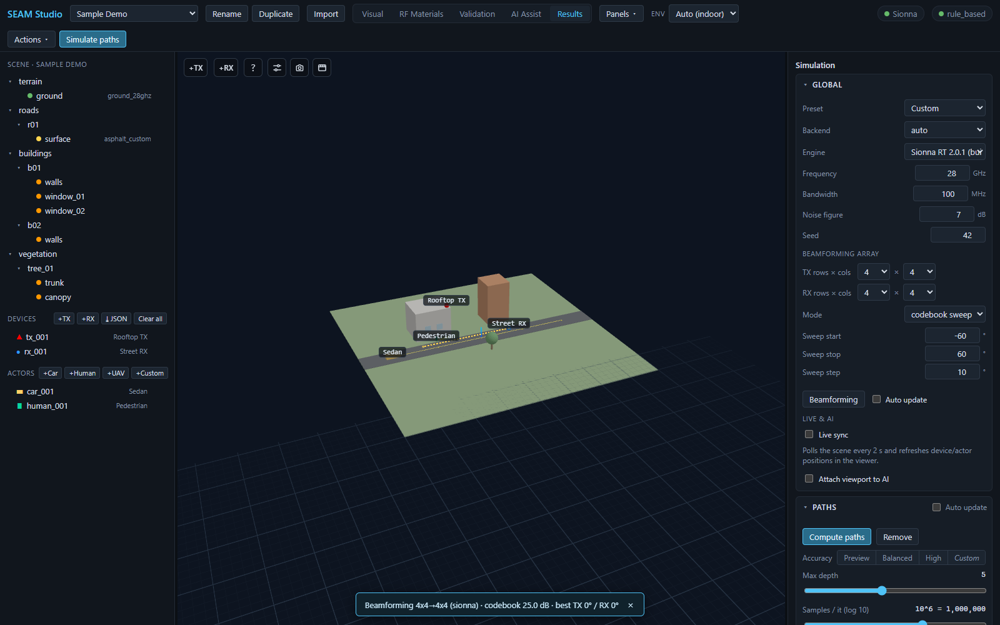
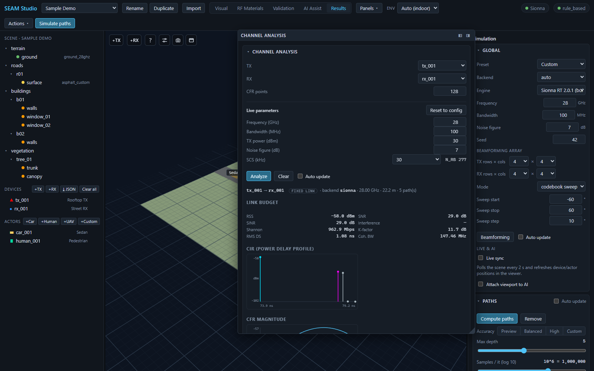

Simulating: paths, radio maps, beamforming, and channel analysis
Everything you compute in SEAM Studio happens in Results mode: ray paths, coverage radio maps, MIMO beamforming, and per-link channel analysis. This guide walks through each solver, the knobs that matter, and how to read the results. The whole workflow runs on the Mock backend if Sionna RT is not installed, so you can follow along without a GPU.
1. Results mode layout
Click the Results tab in the toolbar. The right sidebar holds the Simulation panel with three collapsible sections — Global, Paths, and Radio map — plus the Results panel (path table, overlay toggles). The Channel analysis, Metrics dashboard, UE trajectory, Scenario playback, and ML dataset panels are dockable: open the Panels ▾ menu in the toolbar to float any of them or dock them to either sidebar, from any mode.
The Global section is the shared solver configuration — every solver (paths, radio map, beamforming, channel) reads it:
| Field | What it does |
|---|---|
| Preset | Applies a canonical solver configuration to both Paths and Radio map: 28 GHz Indoor Lab, 28 GHz Outdoor Campus, 3.5 GHz Urban Macro, 60 GHz Indoor, 28 GHz UAV A2G. Editing any knob by hand flips it to Custom. |
| Backend | auto / mock / sionna. auto uses Sionna RT when installed and falls back to the mock solver otherwise. |
| Engine | Only shown when more than one Sionna RT version is registered — pick which version solves paths (e.g. Sionna RT 2.0.1). See ../engines.md. |
| Frequency (GHz) | Carrier frequency (default 28 GHz). |
| Bandwidth (MHz) | Channel bandwidth used for noise, CFR, and capacity. |
| Noise figure (dB) | Receiver noise figure for SNR/SINR. |
| Seed | Random seed — same seed, same rays. |
The Global section also hosts the Beamforming array settings (section 4) and the Live sync toggle.
2. Paths

There are two buttons that run the same solve:
- the blue Simulate paths button on the right of the toolbar (one-click, available in any mode), and
- Compute paths inside the Paths section of the Simulation panel (next to all the knobs, when you want to tune first).
- Press either button. A toast reports the outcome, e.g.
Simulated 5 path(s) via sionna backend. - Rays overlay the 3D scene as TX→RX polylines, colored by interaction: LOS cyan, reflection magenta, diffraction orange, scattering green. TX markers are red, RX markers blue.
- The Results panel lists every path (type / dBm / ns / #int columns). Click a row to see its vertices and interactions mapped to prim ids and RF materials, plus a Delay vs power scatter and an AoA / AoD plot.
Accuracy presets
Instead of tuning ray counts by hand, use the Accuracy segmented control in the Paths section:
| Preset | Samples/it | Max depth |
|---|---|---|
| Preview | 10^5 | 2 |
| Balanced | 10^6 | 3 |
| High | 5×10^6 | 5 |
Move the Max depth (0–12) or Samples / it (log 10) (10^4–10^7) sliders yourself and the control shows Custom. Below them, mechanism checkboxes (Line of sight, Specular reflection, Diffuse reflection, Refraction, Diffraction, Edge diffraction, Lit-region diffraction) pick which interactions the solver traces.
Overlay toggles and filters
The Show: row in the Results panel toggles each overlay independently —
Rays, Radio map, Beamforming, Trajectory rays, Scenario.
The viewer controls filter what is drawn: Strongest N (or All),
Min power (dBm), Color by type/power/depth, and Line width by
power. To clear the ray overlay entirely, press Remove in the Paths
section. Keep Auto update checked and the paths re-solve automatically
whenever the scene changes.
3. Radio map

A radio map sweeps a receive grid over the scene and paints received strength as a heatmap:
- In the Radio map section of the Simulation panel, press Compute radio map (or Simulate radio map in the Results panel).
- The heatmap appears with a jet colormap (blue = weak, red = strong), and a colorbar legend labeled Path gain (dB) — or RSS (dBm) — shows the value range in the viewport.
- Options: Cell size (m), Height (m), and Metric —
Path gain (dB),RSS (dBm), orSINR (multi-TX). The section has its own Accuracy / Max depth / Samples / mechanism knobs. - Remove clears the overlay. Auto update recomputes on scene edits, and the every select (10 s / 30 s / 1 min / 5 min) re-solves on a fixed period for live-sensing scenes.
Cell map vs mesh map
The map above is a planar cell map — a horizontal grid at a fixed height.
To paint coverage onto actual surfaces (walls, floors, roads), select the
target prims, open the Mesh radio map collapsible in the Results panel,
and press Run mesh radio map. It solves one probe per triangle and drapes
the color over the geometry; its own Mesh map checkbox toggles the
overlay, and the value range is reported as e.g. Path gain range −95.2 … −61.4 dB (jet: low → high).
4. Beamforming array

- In the Global section, set the Beamforming array: TX rows × cols and RX rows × cols (1/2/4/8 each, e.g. 4 × 4).
- Pick a Mode:
- codebook sweep — sweeps beam angles on both ends; reveals the Sweep start / Sweep stop / Sweep step (°) fields.
- TX-MRT — maximum-ratio transmission at the TX.
- SVD — both-ends SVD beamforming.
- Press the Beamforming button (also available in the Results panel and via toolbar Actions ▾ → Beamforming).
- The toast summarizes the run, e.g.
Beamforming 4x4→4x4 (mock) · codebook 25.0 dB · best TX 0° / RX 0°, and a result card shows the single-element reference, the gain, and — for a codebook sweep — a jet heatmap of gain vs TX/RX angle. The Auto update checkbox next to the button re-runs it on scene changes.
5. Channel analysis

The Channel analysis panel is dockable — reach it from Panels ▾ and float it if you want it side by side with the 3D view.
- Pick the TX and RX devices and set CFR points (frequency samples across the band, default 128).
- Adjust Live parameters if needed: Frequency (GHz), Bandwidth (MHz), TX power (dBm), Noise figure (dB), and SCS (kHz) (15/30/60/120). Next to SCS the derived N_RB (resource blocks = ⌊BW/(12·SCS)⌋) updates live; Reset to config restores the values from the solver config and TX device.
- Press Analyze. The result line shows the pair with a fixed link badge (a snapshot at the current positions — moving-receiver sweeps live in the UE trajectory panel), the backend, frequency, 3D distance, and path count.
Below it:
- Link budget — RSS, SNR, SINR, Interference (with the interfering-TX count in multi-TX scenes), Shannon capacity, K-factor, RMS DS (delay spread), Coh. BW, and, when the channel is time-varying, Doppler spread and Coh. time.
- CIR (power delay profile) — one stem per tap, colored by path type.
- CFR magnitude — |H| in dB across the band.
- Path-loss models vs RT — 3GPP model predictions with their delta against the ray-traced reference.
Once you change a Live parameter after an analysis, the panel re-analyzes the same pair automatically (debounced). The Auto update checkbox re-runs the last analysis whenever the scene changes (it needs one manual Analyze first); Clear discards the result.
Three collapsed sections extend the panel: Channel sweep (chart a link metric against a swept config field via Run sweep), Doppler-time spectrogram (Compute spectrogram — an STFT heatmap of the time-varying channel), and Flight-log validation (Validate measured vs predicted path gain along a route).
6. Backends, persistence, and stale results
- Every solver falls back to the Mock backend when Sionna RT is not
installed (the toolbar chip reads Mock only). The mock is deterministic
and shape-compatible, so you can build and test full workflows on any
laptop, then flip Backend to
sionnaon a real machine. - Mock rays are not physical. The mock emits a fixed demo set (LOS + a ground bounce + one wall reflection) so the UI pipeline can be exercised — reflection and refraction points are not geometrically traced against the scene. Judge ray plausibility only on the Sionna backend.
- Results persist per project: paths land in
results/{backend}_paths_{NNN}.jsonunder the project folder, and the latest of each kind reloads with the project. - The Run history collapsible in the Results panel is the results explorer: past runs grouped by kind, reloadable with one click, labelable, and prunable (Keep latest N per kind → Prune old results; labeled runs are spared).
- Whenever the scene changes after a compute, the result grows a ⚠ stale badge — the numbers are never silently outdated; re-run to refresh.
Related docs
- Getting started guide — install, first project, modes tour
- TUTORIAL — the full 15-minute first session
- Engines — solving paths on alternate Sionna RT versions
- Sionna versions — feature/material evolution per version
- Accuracy — RT accuracy limits and measurement calibration
- ML datasets — turning solves into training data